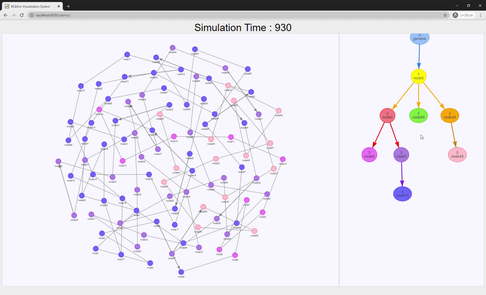

BLOCKCHAIN ATTACK SIMULATOR
ブロックチェーンの振る舞いを、
シミュレーションで探る。
BCASimは、攻撃分析のためのオープンソース・ブロックチェーンシミュレータです。ノードの動作とプロトコルをカスタマイズし、ネットワークとブロックチェーンの変化を観察できます。

THE TOOLKIT
実験を支えるツール
シナリオを設計し、結果を可視化して理解を深める。
git clone https://github.com/bcasim/bcasim
cd bcasim
mvn clean package
java -cp target/bcasim-0.0.1-SNAPSHOT.jar jp.kota.bcasim.main.Main